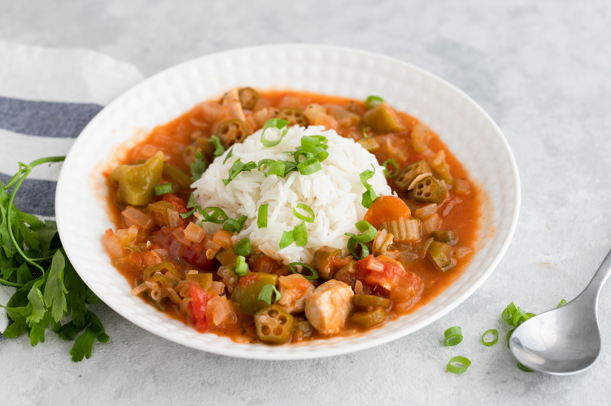

Home
Gumbo

Description
Gumbo is a rich, flavorful stew rooted in Louisiana's Creole and Cajun culinary traditions. It typically features a dark roux as the base, combined with the "holy trinity" of vegetables, onion, celery, and bell pepper, and loaded with meats such as chicken, Andouille sausage, and shrimp.
Gumbo is often thickened with okra or file powder. Bold spices, herbs like thyme and bay leaf, and a splash of hot sauce create a deeply savory, slightly spicy dish that's both hearty and a comforting, soulful expression of Louisiana's diverse cultural heritage.
Ingredients
- 1/2 tablespoon butter
- 1/2 cup flour
- 1 large onion, diced
- 1 green bell pepper, diced
- 2 celery stalks, diced
- 1-2 cups sliced okra, or 1 tablespoon file powder
- 1 lb Andouille sausage, sliced
- 1 lb boneless chicken thighs
- 1 lb raw shrimp
- 6 cups chicken stock
- 2-3 cloves of garlic, minced
- 2 teaspoons Cajun or Creole seasoning
- 1 teaspoon dried thyme
- 2 bay leaves
- Salt and black pepper, to taste
- Louisiana hot sauce, to taste (Crystal, Tabasco, etc)
Steps
- Make the roux. In a large, heavy-bottomed pot, heat the butter over medium heat. Add the flour and gradually whisk it, stirring constantly. Cook the roux for 20-30 minutes, stirring frequently, until it becomes a deep brown color, like chocolate. Be patient and don't stop stirring, or it may burn.
- Saute the vegetables. Once the roux reaches the right color, add the onion, bell pepper, and celery to the pot. Cook for about 5 minutes, until the vegetables soften. Then add the garlic and saute for 1 more minute.
- Add the meats. Stir in the sliced sausage and diced chicken, cooking until the chicekn is lightly browned.
- Add stock and seasonings. Pour in 6 cups of chicken stock and stir well, scraping up any browned bits from the bottom. Add the bay leaves, thyme, Cajun seasoning, salt, and pepper. Bring the mixture to a boil, then reduce heat to low and simmer uncovered for 30-40 minutes.
- Add shrimp and thickeners. Add the shrimp and okra and simmer for another 10 minutes, or until the shrimp are cooked through.
- Serve. Ladle the gumbo over white rice. Enjoy!